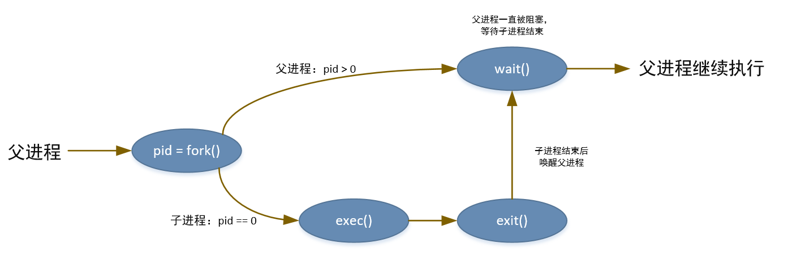

基础知识介绍
“操作系统是什么”这个问题的答案我相信现在玩过电脑的同学应该都知道是什么，但是如果说到“操作系统”内部的一些机制可能就会有些言语不清了吧！
我也是这学期开始学习这门课程的，所以请大家跟着我一起梳理操作系统中的重要知识点。
先说明一点，关于操作系统的历史和分类我感觉还是交给你自己百度吧，我这篇文章将跳过所有历史和分类。如果实在需要一些历史说明我会找一个小空间加上去的。
我所认为的操作系统核心知识（不服忍着）：
- 进程管理
- 内存管理
- 存储管理
- 设备管理
什么是程序
对于CPU来说，它只能识别二进制位，而这些二进制位根据不同的环境可以被解释成不同的意义。程序就是一些可以让CPU看懂的二进制位组成（这些位就是所写的代码经过编译后形成的）。但是代码中有一些是指令，还有的是数据，这对CPU来说是不能区分，这就需要操作系统帮CPU指出哪些是指令，哪些是数据，即操作系统把程序的二进制位按照规定的格式加载到内存中。操作系统的这一点“私心”，即只想执行符合它所规定格式的二进制，所以程序就被分成了Windows程序(Windows PE/COFF格式)和Linux程序(ELF格式)等类型。但是总的来说，程序就是 CPU所支持的指令 + 程序运行所需的数据。从这里我们也就知道了，程序是静态的，无论操作系统把不把它复制进内存，它都在硬盘里面，直到把它删除。
什么是进程
进程，又叫做任务，是操作系统对CPU运行的指令和数据集的一种抽象。如果把程序当作一种类型，则加载进内存即是使用该类型创建对象。使用Java的面向对象来说，类是不可变的（静态数据除外），但是类的对象确实可以改变的。
进程和程序的区别：
- 程序是静态的，存放在硬盘上，可以被操作系统读取。
- 进程是程序加载到内存后的名称，是让CPU读取执行的。
- 进程是动态的。
进程在内存中的表示形式
操作系统为了方便管理进程运行时的数据，所以要使用一个数据结构记录进程运行时的环境状态。这个数据结构称为进程控制块(PCB),它是由操作系统创建和管理。
PCB结构中包含着数据有：
- 标识符：操作系统为了区分进程，给每一个进程分配的id
- 状态：进程的运行状态
- 优先级：被CPU执行的优先度
- 程序计数器：即将被CPU执行的下一条指令地址
- 内存指针：程序被加载到内存后的指令和数据的相关指针
- 上下文数据：进程在被CPU执行过程中寄存器的数据
- I/O状态信息：被进程所使用的I/O请求记录
- 记账信息：进程运行产生的一些统计数据，比如处理器时间总和，使用的时钟数总和等。
进程的状态和状态转换概念
三状态模型
- 就绪态：操作系统已经加载程序进入内存，并且创建好PCB块，等待CPU执行
- 运行态：正在被CPU进行执行
- 等待态：由于某些事件（比如等待IO）而不能继续执行的。
转换事件：
就绪 -> 运行: 由调度程序选择的进程由就绪状态转为被CPU执行的运行态运行 -> 就绪: 由于进程自愿放弃CPU，或者更高优先级的进程抢占了CPU，又或者进程运行到系统所设置的时间段等。运行 -> 等待: 由于进程等待某些事件的发生而进入等待 -> 就绪: 进程等待的事件发生后转入
五状态模型
- 运行态：该进程正在被CPU执行
- 就绪态：进程做好了准备，只要有机会就开始执行
- 阻塞/等待态：进程在某些事件发生前不能执行
- 新建态：刚刚创建的进程，操作系统还没有把它加入可执行进程组中。通常是PCB已经创建好但是还没有加载到内存中的新进程
- 退出态：操作系统从可执行组中释放出的进程，或者因为自身停止，或被取消执行
转换事件：
空 -> 新建：创建执行一个程序的新进程新建 -> 就绪：操作系统准备好再接纳一个进程时，把一个进程从新建态转为就绪态就绪 -> 运行：需要一个新进程执行时，有调度器或分派器从就绪态中选择一个执行运行 -> 退出：当前正在执行的进程表示自己执行完成或者取消运行 -> 就绪：由于进程自愿放弃CPU，或者更高优先级的进程抢占了CPU，又或者进程运行到系统所设置的时间段等。运行 -> 阻塞：由于进程等待某些事件的发生而进入阻塞 -> 就绪：进程等待的事件发生后转入就绪 -> 退出：这种通常时允许父进程终止子进程的操作系统中可见阻塞 -> 退出：同上
七状态模型
- 阻塞/挂起态：进程在外存中并等待一个事件
- 就绪/挂起态：进程在外村中，但是只要被载入内存就可以执行
一些重要的转换事件：
阻塞 -> 阻塞/挂起：如果没有就绪进程，则至少一个阻塞进程被换出（换出到外存中），为另一个没有阻塞的进程让出空间。阻塞/挂起 -> 就绪/挂起：如果等待的事件发生了，则处于阻塞/挂起状态的进程可以转换到就绪/挂起状态。就绪/挂起 -> 就绪：如果内存中没有就绪态进程，操作系统需要调入一个进程继续执行就绪 -> 就绪/挂起：如果释放内存以得到足够的内存空间的唯一方式就是挂起一个就绪态的进程，那么这种转换才会方式。但是通常就绪态更多的是可以直接运行。新建 -> 就绪/挂起或者新建 -> 就绪：当创建一个进程时，该进程被加入到就绪队列或者加入到就绪/挂起队列中。阻塞/挂起 -> 阻塞：这种转换比较少见，作为特殊情况下才会出现（和进程调度算法有关）
挂起的用途：这种是由于内存空间不足，由调度算法执行，使一些进程换出到硬盘上。
一个挂起的进程，无论是否等待一个事件都不能立即执行
导致进程挂起的原因：
- 交换
- 其他OS原因
- 交互式用户请求
- 定时
- 父进程请求
进程的管理
操作系统的重要功能之一就是管理进程，即对进程的创建、销毁和运行状态进程管理。
进程的执行模式
操作系统作为一种中间层软件—对下管理硬件资源，对上为应用程序提供通用接口服务，故应用层软件对硬件资源的合理使用都是由操作系统保证的。CPU对其提供了至少两种执行模式。
即对操作系统的执行提供一种叫做特权态或内核态的模式，对用户引用程序提供用户态模式。CPU针对不同模式下执行不同的控制能力。在内核态下，软件具有对CPU以及所有指令，寄存器和内存的控制能力，但是这些对用户态下的软件时不需要的，并且为了安全性也不会提供给用户态下的应用程序。
那么怎么切换这两种模式呢？在典型情况下，都是由用户程序通过一些系统提供的系统调用或者中断例程执行时，才会由用户态切换到内核态。
例如：在64位IA-64体系结构的Intel Itanium处理器，有一个处理器状态寄存器（PSR），包含2位CPL（当前特权级别）域，级别0是最高特权级别，级别3是最低特权级别。Linux使用级别0最为内核态。
当中断发生时，处理器就会清空PSR中的位，包括设置CPL域的值设为0。使用irt（中断返回）指令时，会从处理器恢复中断程序的PSR值，即设为用户态值。
进程的创建过程
当操作系统准备创建一个进程时，会按照下面的步骤执行：
- 给进程分配一个唯一的进程标识符。
- 给进程分配内存空间
- 初始化进程控制块（PCB）
- 设置正确的连接：目标是把新建的进程放到调度器的数据结构中，方便调度器调度。
- 创建或者扩充其他数据结构：比如PCB中的记账数据结构。
上面的步骤是操作系统创建进程时的要做的事情，但是准确一点来说，作为开发者怎么创建一个进程的呢？或者我们是怎么告诉操作系统要运行一个程序的呢？
答案就是：由当前正在执行的程序告诉操作系统。就比如，当我们双击桌面上的程序快捷键时，桌面应用程序响应了我们的点击事件，然后知道我们要运行这个程序，然后它就告诉操作系统，我给你个程序，用户想运行它，然后操作系统就按照上面的流程
为它创建一个进程。这是不是类似于父子关心呢？我们双击的那个程序运行后的进程就是桌面这个进程的孩子。其实现在的操作系统创建进程就是通过父进程创建子进程的方式新建进程，子进程也可以创建其他进程，这样就形成了一个进程树。
到了这里你可能会想到操作系统的第一个进程是谁，又是谁创建的呢？这个可以看一下进程上的PID（进程唯一标识）为1的那个就是。Linux上（运行ps -el命令），有一些发行版本是systemd,还有一些发行版本是init。之后所有的进程都是他们创建的（在Linux下任务等同于进程）。作为开发者，本质也是一样的。在Linux上，是使用代码调用系统调用接口fork函数和exec函数。在Windows上，使用CreateProcess函数。
Windows下CreateProcess函数示例：
#include <stdio.h>
#include <windows.h>
int main() {
STARTUPINFO si;
PROCESS_INFORMATION pi;
/* 申请内存 */
ZeroMemory(&si, sizeof(si));
si.cb = sizeof(si);
ZeroMemory(&pi, sizeof(pi));
/* 创建子进程 */
if (!CreateProcess(
NULL, // 应用程序名称
"C:\\WINDOWS\\system32\\mspaint.exe", // 命令，即要运行的程序，这里是打开画板
NULL, // 不继承进程句柄（process handle）
NULL, // 不继承线程句柄（thread handle）
FALSE, // 禁用句柄继承
0, // 不适用创建标志
NULL, // 不使用父进程的已有环境块
NULL, // 不使用父进程的启动目录
&si, // 设置新进程的一些特性，比如窗口大小，颜色等
&pi // 创建新进程以及其线程的句柄和标识符
)){
fprintf(stderr, "Create Process Failed");
return -1;
}
// 父进程等待子进程结束
WaitForSingleObject(pi.hProcess, INFINITE);
printf("Child Complete");
// 关闭句柄（释放内存）
CloseHandle(pi.hProcess);
CloseHandle(pi.hThread);
return 0;
}Linux下fork和exec函数的使用：
#include <stdio.h>
#include <stdlib.h>
#include <sys/types.h>
#include <unistd.h>
int main(){
// 存储子进程id
pid_t pid;
// 复制当前进程来创建子进程
pid = fork();
if(pid == -1){ // 创建失败
fprintf(stderr,"Fork Failed\n");
exit(-1);
} else if(pid == 0){ // 如果是子进程
// 子进程执行逻辑
printf("Child Process Running....\n");
// 使用一个新程序取代自身
execlp("/bin/ls", "ls", NULL);
} else { // 父进程逻辑
// 父进程等待子进程执行完成
wait(NULL);
printf("Child Complete.\n");
}
return 0;
}
fork和exec的区别：fork是复制当前进程，即执行这个函数后，会出现两个进程，这两个进程一样，不过有一个区别就是，这个函数返回给这两个进程不同的返回值用于区分不同进程。fork在父进程中返回值是子进程的PID，在子进程中返回0。sub_pid = fork();这个语句使创建两个进程。后面就可以根据返回值不同区分不同的进程。
注意：fork创建的子进程和父进程具有相同的代码逻辑，如果没有后面的if做区分，则父子进程执行相同的代码，直到运行结束。execlp是exec函数系中的一个，exec是加载一个新的程序取代当前程序，如果代码直接执行exec函数，当前程序就会终止，开始执行新的代码。
通过fork和exec组合创建新的程序：先使用fork创建一个当前进程的复制进程，然后根据返回值在子进程中运行exec函数执行一个新的进程。
例子：比如在Shell中运行一个程序，Shell就会复制自身，然后再让那个程序代替子进程执行。

进程的销毁
当程序执行完成后，会发生什么？操作系统大管家，管理着资源，当然是释放这个进程占用的资源啦！不过我们先讨论一下下面问题：
- 程序什么时候终止
- 程序终止时操作系统做了什么？
- 程序之间由父子关系，操作系统怎么处理这些关系出现的问题？
先回答第一个和第二个问题：程序通过主动调用系统调用函数exit表示自己退出，让操作系统删除自身。每一个进程结束时都会有一个返回值返回给父进程（可以通过系统调用wait获取）。然后操作系统释放该进程之前占用的系统资源：物理和虚拟内存，打开的文件和I/O缓冲区等。但是还有一些情况，就是程序被动终止：
- 子进程使用超过他的所分配的资源
- 父进程分配给子进程的任务，父进程不在需要
- 父进程正在退出，而且操作系统不允许无父进程的子进程继续执行
- 父进程可以终止他所创建的子进程
对于父子关系的进程，操作系统怎么处理？这个答案和操作系统具体实现有关。有的操作系统不允许没有父进程的子进程执行，即如果一个子进程的父进程终止了，那么这个子进程也要终止。这种叫做练级终止。
对于其他允许子进程存在的操作系统，操作系统会直接让子进程执行完成。
如果一个进程终止时，操作系统会释放其资源，但是在
进程表中关于这个进程的记录还是存在的，直到其父进程调用wait函数。这是因为进程表中存在着子进程的退出状态。
关于子进程还有两个概念：
- 僵尸进程(zombie process): 这个概念是由于子进程比父进程的wait函数执行前就结束了造成的。说白了，就是子进程结束了，但是父进程还没有查询子进程的返回状态（
wait调用），这时的子进程就处于僵尸状态。 - 孤儿进程(orphan process): 这个是由于父进程结束的比子进程还要早（即父进程没有调用
wait函数等待子进程）做成的。这种情况Unix/Linux会给他寻找一个父进程，然后等待新的父进程调用wait时结束。这个新的父进程通常是init进程。但是现在Ubuntu发行版中的Linux系统使用的时systemd进程，这个进程会定期调用wait函数。
进程的切换过程
这里描述的是关于进程间切换怎样触发（何时），以及操作系统做怎么样的处理（如何操作），关于怎么选择要切换的进程是关于进程调度有关的知识吗，我会在后面总结。
进程控制块保存着一个进程运行时的所有有关数据：程序的代码在内存中的位置，数据的位置，该进程运行时的一些寄存器状态，执行时间等。所以说进程时动态的，它在运行期间会产生一些临时数据。
所以当要切换两个进程时，就要把与这个进程相关的所有数据存起来，然后再把新的进程的数据加载到寄存器中，设置PC（CPU的指令指针）等操作。这个过程又叫做上下文切换(context switch)。
官方定义：切换CPU到另一个需要保存当前进程状态和恢复另一个进程的状态，这个任务称为
上下文切换(context switch)。 – 《操作系统概念 P78》
何时进行切换：
- 时钟中断：这种情况是由于操作系统给每一个程序都设置了
最大执行时间（时间片，即程序在被中断前可以执行的最大时间段），即当进程运行时间达到了这个值，就会强制发生中断，中断处理程序就会接管CPU然后调入一个新的进程被执行。 - I/O中断：这种情况是由于进程发生了I/O请求，由于I/O效率过于低下，如果让CPU等待I/O程序完成再继续执行，会浪费很多CPU执行时间，所以为了效率，就设置如果进程发I/O请求，就让他让出CPU，让其他进程先执行，当这个I/O请求执行完成后再等待调度器调度。
- 内存失效：这种情况本质也是由于I/O请求引起的，不过这个是由于处理器访问的时一个虚拟内存地址，但是这个虚拟地址单元没有在内存中（缺页中断），操作系统发出一个I/O请求，从外村中把这个下虚拟内存页相关数据加载到内存。这种被暂停的进程被设为
阻塞，当想要的块进入内存中后，该进程就会被设置为就绪。
操作系统如何操作：
- 保存CPU上下文环境，包括程序计数器和其他寄存器，这里面存储的都是和该进程执行时有关的数据
- 更新当前处于运行态进程的PCB数据，包括进程的状态转变，以及原因，和记账信息
- 将进程的PCB放入到响应的队列（进程表），存放的数据结构和具体调度算法相关
- 选择另一个进程执行（由调度器选择）
- 更新所选的进程的PCB，包括设置其状态为运行态
- 更新内存管理的数据结构（MMU的一些值）
- 恢复选择的进程在其上一次被执行时的上下文环境，即把上一次的各个寄存器值还原回去，包括PC。
进程之间通信
这里只说明一下进程之间通信的一些方法和原理，而关于这些方法可能出现的一些问题，怎么解决这些问题暂不讨论。
进程间通信（InterProcess Communication， IPC），肯定至少需要两个进程才可以，这种为其他进程共享数据的进程叫做协作进程。
协作进程的好处（多进程一起工作的好处）：
- 信息共享：数据被多个进程感兴趣，这样可以减少数据的复制
- 计算加速：这种特指可以把一个计算任务分成多个，让多个程序同时计算，然后再有一个总的进程收集的操作。这种要求CPU具有多个核心。
- 模块化：这种是为了方便开发和维护，把一个程序分成多个小程序开发或运行，通过小程序之间合作共同完成一个大的任务。
进程间通信有两种模型：
- 共享内存：在内存种建立一种共享区域，让多个进程通过对这个区域读写数据来交换信息。这种方式可能出现高速缓存一致性问题。
- 消息传递：通过在协作进程间交换消息来实现，在多核CPU上，性能要优于共享内存
共享内存快于消息传递，这是因为消息传递实现上通常都是需要系统调用，这样会有一部分时间花在内核执行上面，而共享内存的访问可以作为常规访问，无需借助内核。
共享内存模型
采用共享内存的进程间通讯，需要通讯进程建立共享内存区域。这样出现两个问题：
- 共享内存区域开辟在哪？
- 共享区域怎么共享
我们先讨论一下第二个问题，每个进程所能访问的内存空间都被操作系统管理，如果进程想要访问不属于它的内存区域，操作系统都会阻止；所以共享内存需要两个或者更多的进程取消这个限制，让别的进程访问自己，然后进程可以访问其他进程开放的共享区域，就可以认为这个共享区域被附加到自己原有的地址空间之后了。怎么实现这个功能呢，在POSIX系统下，是通过内存映射文件的方式将内存空间区域与文件相关联。
POSIX系统内存共享步骤：
- shm_open(): 通过这个系统这个系统调用创建内存共享对象。
- ftruncate(): 用于配置上面返回的共享对象的大小（以字节为单位）
- mmap(): 创建内存映射文件，以便包含共享内存对象。返回一个指向内存映射文件的指针。
POSIX系统的代码实例(生产者-消费者模型)：
Ubuntu18.04系统下生产者代码：
#include <stdio.h>
#include <stdlib.h>
#include <string.h>
#include <fcntl.h>
#include <sys/stat.h>
#include <sys/mman.h>
#include <unistd.h>
#include <sys/types.h>
int main(){
// 声明内存空间大小
const int SIZE = 4096;
// 声明内存空间文件名称
const char *name = "OS";
// 共享数据
const char *message_0 = "Hello";
const char *message_1 = "World";
// 共享内存文件描述符
int shm_fd;
// 指向共享内存对象
void *ptr;
// 创建一个共享内存对象
shm_fd = shm_open(name, O_CREAT | O_RDWR, 0666);
// 配置共享内存对象的大小
ftruncate(shm_fd, SIZE);
// 实际内存映射到共享内存对象上
ptr = mmap(0, // 本质是NULL，使用内核寻找可用的内存空间
SIZE, // 内存空间大小
PROT_WRITE, // 共享空间被保护的模式
MAP_SHARED, // 内存空间对其它进程的可见性
shm_fd, // 共享对象
0 // 偏移量
);
// 写数据
sprintf(ptr, "%s", message_0);
ptr += strlen(message_0);
sprintf(ptr, "%s", message_1);
ptr += strlen(message_1);
return 0;
}Ubuntu18.04系统下消费者代码：
#include <stdio.h>
#include <stdlib.h>
#include <string.h>
#include <fcntl.h>
#include <sys/stat.h>
#include <sys/mman.h>
int main(){
// 声明内存空间大小
const int SIZE = 4096;
// 声明内存空间文件名称
const char *name = "OS";
// 共享内存文件描述符
int shm_fd;
// 指向共享内存对象
void *ptr;
// 创建一个共享内存对象
shm_fd = shm_open(name, O_CREAT | O_RDONLY, 0666);
// 实际内存映射到共享内存对象上
ptr = mmap(0, // 本质是NULL，使用内核寻找可用的内存空间
SIZE, // 内存空间大小
PROT_READ, // 共享空间被保护的模式
MAP_SHARED, // 内存空间对其它进程的可见性
shm_fd, // 共享对象
0 // 偏移量
);
// 读数据
printf("%s\n", (char *)ptr);
// 移除共享对象
shm_unlink(name);
return 0;
}编译命令：
$gcc -o consumer consumer.c -lrt
$gcc -o producer producer.c -lrt注意：必须在编译命令后面加上
-lrt，否则报找不到shm_*函数错误。
消息传递模型
这种模型要求存在第三方提供一种通讯机制，比如存在一个消息传递的第三方程序，一个进程往这个消息传递的程序发送，另一个进程从里面读取数据。对于这种第三方程序则要求至少提供两种操作：
- send(message): 发送消息
- receive(message): 接收消息
按照通信特征可分为：
- 直接通信和间接通讯：传递消息时是否有明确的接收人而区分：
直接通信，间接通信 - 同步和异步通讯：进程是否等待消息的
接收或到来而区分：阻塞发送，阻塞接收，非阻塞发送，非阻塞接收 - 自动和显式的缓冲：针对于第三方软件存储消息的消息数量可分为：
零容量,有限容量,无线容量
直接通信需要通讯的没有给进程明确的指定通信的接收者或者发送者：
- send(P, message): 向进程P发送message
- receive(Q, message)或者receive(id, message): 从进程Q接受message，或者从任何任何进程获取message，id被设置为与其通讯进程的名称
间接通信是指进程通过邮箱或者端口来发送和接收消息。
- send(A, message): 向邮箱A发送message
- receive(A, message): 从邮箱A接受message
使用网络第三发处理消息传递实例：
Java实现的网络消息发送者：
// 服务端代码
import java.io.BufferedReader;
import java.io.IOException;
import java.io.InputStream;
import java.io.InputStreamReader;
import java.io.OutputStream;
import java.io.PrintWriter;
import java.net.ServerSocket;
import java.net.Socket;
public class ServiceProcess {
public static void main(String[] args) throws IOException, InterruptedException {
ServerSocket serverSocket = new ServerSocket(8888);
Socket socket = serverSocket.accept();
BufferedReader reader = getReader(socket);
PrintWriter writer = getWriter(socket);
System.out.print("服务端接受：");
System.out.println("\t" + reader.readLine());
writer.write("服务端接受完成");
writer.flush();
reader.close();
writer.close();
socket.close();
serverSocket.close();
}
// 封装输出流
private static PrintWriter getWriter(Socket socket) throws IOException {
OutputStream outputStream = socket.getOutputStream();
return new PrintWriter(outputStream);
}
// 封装输入流
private static BufferedReader getReader(Socket socket) throws IOException {
InputStream inputStream = socket.getInputStream();
InputStreamReader inputStreamReader = new InputStreamReader(inputStream);
return new BufferedReader(inputStreamReader);
}
}Java使用网络服务接受消息代码：
// 客户端代码
import java.io.BufferedReader;
import java.io.IOException;
import java.io.InputStream;
import java.io.InputStreamReader;
import java.io.OutputStream;
import java.io.PrintWriter;
import java.net.Socket;
public class ClientProcess {
public static void main(String[] args) throws IOException {
Socket socket = new Socket("localhost", 8888);
BufferedReader reader = getReader(socket);
PrintWriter writer = getWriter(socket);
writer.println("message：Hello World");
writer.flush();
System.out.println("客户端接受：");
System.out.println("\t" + reader.readLine());
System.out.println(21312312);
writer.close();
reader.close();
socket.close();
}
// 封装输出流
private static PrintWriter getWriter(Socket socket) throws IOException {
OutputStream outputStream = socket.getOutputStream();
return new PrintWriter(outputStream);
}
// 封装输入流
private static BufferedReader getReader(Socket socket) throws IOException {
InputStream inputStream = socket.getInputStream();
InputStreamReader inputStreamReader = new InputStreamReader(inputStream);
return new BufferedReader(inputStreamReader);
}
}